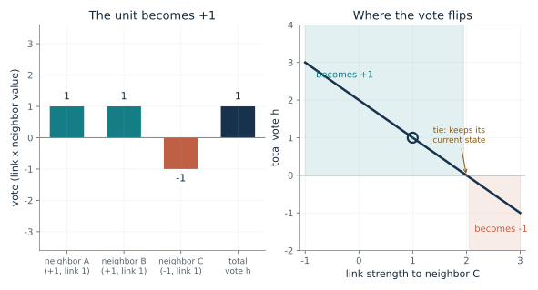
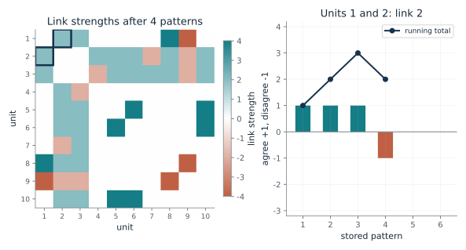
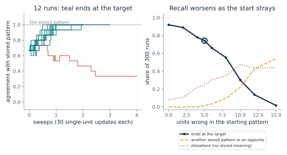
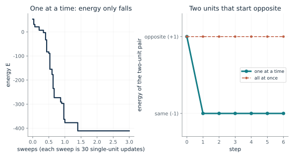
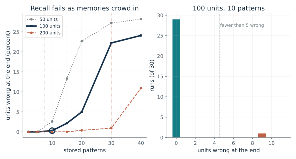
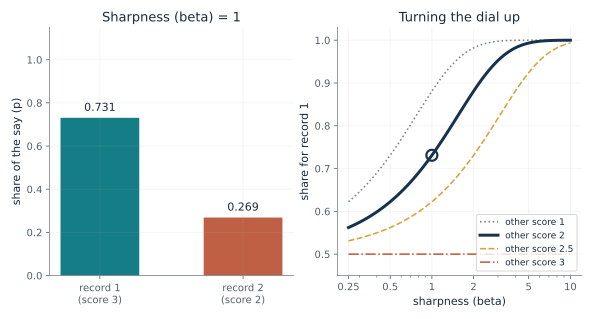
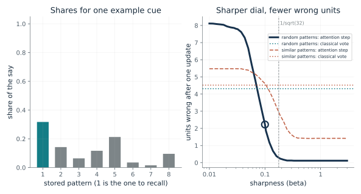
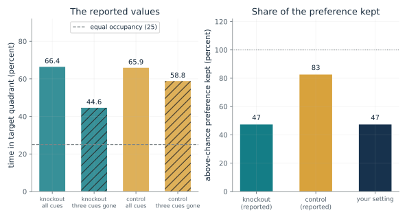

How does one unit decide by a vote?
From Chapter 6, A vote at each unit finished a damaged pattern
A unit hears three neighbors, two saying plus one and one saying minus one. What does it do, and what does it do when the votes cancel?
Every other unit says plus or minus, and each voice counts for more or less according to its link. The unit adds up the votes and takes the sign of the total. If the total is exactly zero it keeps its current value. Repeated across the network, these small decisions can pull a damaged pattern toward a stored one.
Predict first: With neighbors A and B at plus one through links of 1, predict the link strength on minus-one neighbor C at which the unit stops being pulled to plus one, and what it does exactly there.

Link strength to the minus-one neighbor: 1 · The unit's current value: 1
What happens: At link 2 the minus vote exactly cancels the two plus votes, so h = 0 and the unit keeps whatever it held, here minus one. Any weaker link and it turns plus one; any stronger and it turns minus one.
The three votes add to h = 1. That is positive, so the unit becomes +1, whatever it held before.
- Votes for plus one
- 2
- Votes for minus one
- -1
- Total vote (h)
- 1
- The unit
- becomes +1
Everything else in the chapter is built from this one local rule: each unit adds up weighted votes and follows the sign.
Hopfield's paper reports no brain experiment, and the chapter treats this as a model, not a description of neurons.
The rule specifies a computation a machine performs: a weighted sum and a threshold at each unit.
Show the calculation
h = 1 x (+1) + 1 x (+1) + 1 x (-1) = 1. h is not zero, so the new value is the sign of h.
The equations and symbols
- s_i
- the value of unit i, plus 1 or minus 1
- h_i
- the total vote unit i hears
- w_ij
- the link strength between unit i and unit j
- sign
- plus 1 for a positive total, minus 1 for a negative one
Two-state units, a known set of links, and a unit that is picked to update. The rule is one local decision; whether many such decisions finish a pattern depends on the links and the update order.
Check your understanding: Two neighbors are plus one and one is minus one, all links 1 (as in the chapter). If one of the plus neighbors instead becomes minus one, what does the unit do?
Book source: Chapter 6, A vote at each unit finished a damaged pattern. Illustration C06-D01. Formula. Book formula. The neighbor values (plus, plus, minus) and links of 1 are the chapter's Figure 6.1 illustration; the third link strength is varied here. The plus-or-minus-one form is a modern restatement of Hopfield's 0/1 units.
How do stored patterns become links?
From Chapter 6, A vote at each unit finished a damaged pattern
Two units agree in three stored patterns and disagree in one. How strong is the link between them, and what does one more pattern do?
For each stored pattern, multiply the values of two units and add those products over all the patterns. Two units that agree across many memories end with a strong positive link. Two that disagree more often than they agree end with a negative one.
Predict first: Units 1 and 2 agree in three stored patterns and disagree in one. Predict their link, then predict what one more pattern in which they disagree does.

Stored patterns: 4 · Pair of units: 0
What happens: After four patterns the link between units 1 and 2 is 1 + 1 + 1 - 1 = 2. The fifth pattern has them disagree, so it drops to 1. Agreement adds and disagreement subtracts, one pattern at a time.
After 4 stored patterns, units 1 and 2 agree in 3 and disagree in 1, so their link is 2. Each pattern adds +1 for agreement or -1 for disagreement.
- Link between the pair
- 2
- Patterns where they agree
- 3
- Patterns where they disagree
- 1
- Strongest link anywhere
- 4
Storage is a single pass with no training loop: add up products. It also means every stored pattern touches every link, which is the root of the crowding problem in the next illustrations.
The chapter treats the rule as a model of association; it says nothing about where a brain stores anything.
The links are computed in one pass from the patterns, which is why a classical Hopfield network needs no training loop.
Show the calculation
Link = sum over patterns of (value of unit 1) x (value of unit 2) = +1 +1 +1 -1, which is 2. Links are unnormalized sums and have no self-links (the diagonal is 0).
The equations and symbols
- xi_i^mu
- the value, plus or minus 1, of unit i in stored pattern mu
- P
- the number of stored patterns
- w_ij
- the link between units i and j
- w_ii = 0
- no unit links to itself
Plus or minus one patterns, an unnormalized sum, and no self-links. Normalizing changes the scale of the votes but not their signs.
Check your understanding: Two units agree in four of five stored patterns and disagree in one. What is their link, and does a unit at plus one push the other toward plus one or minus one?
Book source: Chapter 6, A vote at each unit finished a damaged pattern. Illustration C06-D02. Formula. Book formula. The ten-unit patterns are constructed for the illustration (seed 1982 for units 3 to 10); the first two units are set by hand so they agree in three of the first four patterns, as in the chapter's constructed example. Not Hopfield's data.
How far from a stored pattern can the start be?
From Chapter 6, A vote at each unit finished a damaged pattern
If a pattern is damaged in a few units and the network updates, how often does it finish the pattern?
Start the network on a damaged pattern and let the units update one at a time. When the start is close, it usually settles on the stored pattern. The farther the start, the less often, and some runs end on a different stored pattern, on an opposite, or on a stable state with no stored meaning.
Predict first: Before moving the slider, predict how many wrong units in the starting pattern this 30-unit, 5-pattern network can tolerate before recall usually fails.

Units wrong in the starting pattern (of 30): 5
What happens: Around 10 wrong units out of 30 is where recall of the exact target stops being usual. Wrong answers are stable too: runs end on other stored patterns, opposites, or states with no stored meaning.
Starting 5 units from a stored pattern in a network of 30 units holding 5 random patterns, 74 percent of 300 seeded runs ended exactly at it. Wrong answers were stable too: 1 percent landed on another stored pattern or an opposite and 24 percent on a state with no stored meaning.
- Runs ending at the target
- 74 percent
- Runs ending at another stored pattern or an opposite
- 1 percent
- Runs ending in no stored pattern
- 24 percent
- Average sweeps to settle
- 2.28
This is the content-addressable memory Hopfield wished for: a piece of an item leads to the rest. It also shows the cost, since a settled state is not necessarily the intended memory.
People seem to recall a whole scene from a few cues, but that is everyday experience, not a measured result. Whether any brain region does this is an open question.
A classical Hopfield network completes a partial cue by repeated local votes, with no built-in check that the result is the intended item.
Show the calculation
Each run draws 5 random plus/minus-one patterns on 30 units, builds the links by the storage rule, flips 5 units of pattern 1 at random and updates one unit at a time in random order until a full sweep changes nothing. Counts: 223 at the target, 4 at another stored pattern or an opposite, 73 elsewhere, out of 300.
The equations and symbols
- s
- the state of all 30 units, plus or minus 1
- w_ij
- the storage-rule links for 5 random patterns
- xi^mu
- stored pattern mu
Random patterns, symmetric links, no self-links, asynchronous updates until a sweep changes nothing. A different coding, normalization or pattern family changes the numbers. A simulation of a small network is not a measurement of a brain.
Check your understanding: A run from a damaged start ends at a stable state. Does stability show that the network recovered the intended pattern?
Book source: Chapter 6, A vote at each unit finished a damaged pattern. Illustration C06-D03. Simulation. Simulation with disclosed seeds: 300 runs per setting, each with 5 random plus-or-minus-one patterns on 30 units, the unnormalized storage rule, and random-order one-unit-at-a-time updates. The chapter quotes Hopfield's own figures (more than 90 percent within 5 places for 30 units and 5 patterns, in his 0/1 version); this simulation computes its own counts and does not reproduce his.
Why must units update one at a time?
From Chapter 6, Recall slid downhill and stopped, but crowded memories blurred
Does the network always come to rest, and what goes wrong if every unit updates at the same instant?
The energy gives every network state a score. A unit flips only when the vote it hears favors the flip, which can lower the score or leave it alone, never raise it. A finite network must therefore reach a state where no unit wants to change. If two units update at the same instant, each acts on a stale vote, and the argument no longer holds.
Predict first: If every unit updates at the same instant instead of one at a time, predict whether two units with a positive link that start opposite settle, and whether the energy still only falls.

Update schedule: one at a time · Random start number (30 units): 1
What happens: Updated together, the two units each copy the other, swap places, and swap back forever, and their energy stays at plus 1. Updated one at a time they settle immediately and the energy drops to minus 1.
Updating one unit at a time from random start 1, the energy fell from -61 to -447 and never rose; the largest rise was 0. The two-unit pair on the right settles after one change.
- Energy at the start
- -61
- Energy at the end
- -447
- Largest rise in one step
- 0
- The run ends in
- a stable state
The energy score is the argument that the network stops. It also explains the difference between a design that is guaranteed to settle and one that merely often does.
Hopfield used random update moments because there is no evidence for global synchrony among neurons; that is a modeling choice, not a measurement.
A machine that updates all units in parallel can oscillate, so the schedule is part of the algorithm.
Show the calculation
Energy E = -1/2 x sum over i and j of w_ij s_i s_j. For two units joined by a link of 1: matching states give E = -1 and opposite states give E = +1. Updated one at a time from (+1, -1), the first unit sees a vote of -1, becomes -1, and the pair matches with E = -1. Updated together, each copies the other: (+1, -1) becomes (-1, +1) and then back, with E = +1 every step.
The equations and symbols
- E
- the energy: a score for a whole network state, low when units agree with their links
- s_i, s_j
- two unit values, plus or minus 1
- w_ij
- their link; the sum counts each pair twice, so one half corrects it
The guarantee needs three conditions: symmetric links, no self-links, and units updated one at a time with every unit chosen repeatedly. With simultaneous updates the guarantee can fail. The 30-unit runs show behavior in one constructed network.
Check your understanding: Two units with a link of 1 are plus and minus. Updating the first alone, what are the states and energy afterwards?
Book source: Chapter 6, Recall slid downhill and stopped, but crowded memories blurred. Illustration C06-D04. Formula. Book formula and the chapter's own two-unit example (positive link of 1, opposite start). The 30-unit network is a constructed illustration with 5 random patterns (seeds disclosed in the notebook), not Hopfield's runs.
How many memories can a network hold?
From Chapter 6, Recall slid downhill and stopped, but crowded memories blurred
As more patterns are stored in the same units, when does recall from an exact stored pattern begin to fail?
Every stored memory pulls a little on every vote. With few memories the pulls are small. With many they add up to a hum that can drown the signal. The crosstalk estimate says how likely a unit's first vote is wrong, and the simulation shows what the settling dynamics make of it.
Predict first: With 100 units, predict how recall from an exactly stored pattern changes as the number of stored patterns grows from 5 to 15 and then to 40.

Stored patterns: 10 · Units in the network: 100
What happens: At 40 patterns in 100 units, far past the 0.15 N mark at 15, runs from an exactly stored pattern end with many units wrong. With 10 patterns almost every run stays at its start.
With 100 units and 10 random patterns, 30 seeded runs started at a stored pattern and ended with 0.3 units wrong on average; 29 of 30 had fewer than 5 wrong. The dotted verticals mark 0.15 N, Hopfield's rule of thumb quoted in the chapter.
- Average units wrong at the end
- 0.3
- Runs with fewer than 5 units wrong
- 29 of 30
- Runs that stayed exactly at the start
- 29 of 30
- Share of units wrong after one simultaneous pass (estimate)
- 0.046 percent
A fixed number of units can only keep so many random patterns apart. The limit comes from crosstalk and motivates ways to separate or sharpen memories.
Hopfield wrote that adding memories past the limit makes all memory states irretrievable unless there is a provision for forgetting old memories. The chapter hands that to the next chapter.
Capacity depends on the coding and the error count. The modern attention-style network's capacity grows much faster, so the 0.15 N rule of thumb does not carry over to it.
Show the calculation
Crosstalk estimate: each unit's vote is (N - 1) from its own pattern plus noise of size sqrt((P - 1)(N - 1)). A first-pass error needs the noise to beat the signal: chance = Phi(-sqrt((N - 1)/(P - 1))) = Phi(-sqrt(99/9)) = 0.000456. The runs use the plus/minus-one storage rule and one-at-a-time updates.
The equations and symbols
- N
- the number of units
- P
- the number of stored patterns
- h_i
- the total vote on unit i when the network sits on pattern 1
- crosstalk
- the pull of the other stored patterns, treated as random noise
- Phi
- the standard bell-curve cumulative probability
Random patterns, the unnormalized storage rule, runs that start exactly at a stored pattern, and asynchronous updates. How errors are counted and how units are coded change the capacity figure. Beyond capacity recall can fail outright.
Check your understanding: For 100 units and 15 stored patterns, the crosstalk estimate of a wrong first vote per unit is about 0.4 percent. Why can a run still end with many units wrong?
Book source: Chapter 6, Recall slid downhill and stopped, but crowded memories blurred. Illustration C06-D05. Simulation. Simulation with disclosed seeds (30 runs per setting) of the plus-or-minus-one network, plus the standard Gaussian crosstalk estimate, which is the companion's own addition and not printed in the chapter. The chapter reports Hopfield's rule of thumb of about 0.15 N for his 0/1 network and his loads of 5 and 15 patterns in 100 units; the counts shown here are this simulation's, not his.
What does the sharpness dial do to a best match?
From Chapter 6, A sharpness dial let the best match win, and the rule was attention
Two stored records match a fragment with scores 3 and 2. How much say does each get, and what does the dial change?
Each stored memory is a voice in a room. A match score says how well it lines up with the cue, and the dial decides how many voices share the result. Turn the dial up and a unique best match takes nearly everything; turn it down and the shares spread out. If two scores tie, they split evenly at any setting.
Predict first: With scores 3 and 2 and the dial at 1, the first record gets about 0.73. Predict its share with the dial at 5, and whether any new evidence has arrived.

Sharpness (beta): 1 · Score of the other record: 2
What happens: At beta 5 the first record gets about 0.99. The scores have not changed and no new evidence has arrived. The larger share is a weight in this calculation, not a 99 percent chance that the first reference is right.
With scores 3 and 2 and beta 1, record 1 gets 0.731 of the say. Nothing about the scores changed, only the dial, and this share is a weight, not the chance that record 1 is right.
- Share for record 1
- 0.731
- Share for record 2
- 0.269
- Score gap
- 1
- Shares add up to
- 1
The same softmax weights the values in a transformer's attention. The sharpness setting decides whether a lookup picks one stored item or blends several, which matters when a system returns a convincing answer.
The paper did not test whether biological memory uses this weighting.
In a standard transformer the design fixes the sharpness (beta is 1 over the square root of the key size); here it is a setting that changes how many patterns are averaged.
Show the calculation
p1 = e^(1 x 3) / (e^(1 x 3) + e^(1 x 2)) = 1 / (1 + e^(-1 x 1)) = 0.731. p2 = 1 - p1 = 0.269.
The equations and symbols
- z_k
- the match score of stored pattern k
- p_k
- the share of the say given to pattern k; the shares add to 1
- beta
- the sharpness setting, above zero
- e
- the base of natural logarithms, about 2.718
Match scores are given; a tie splits the say evenly at any setting. A share is a weight in this calculation, not a probability that a record is the right one. The intended record may be absent from the candidates, and two records can share the details in the fragment.
Check your understanding: Two candidate records tie at score 3. What is each one's share at beta 10, and what would you need before trusting either?
Book source: Chapter 6, A sharpness dial let the best match win, and the rule was attention. Illustration C06-D06. Formula. Book formula (softmax with a sharpness setting, as in Ramsauer and colleagues). The scores 3 and 2 and the settings 1 and 5 are the chapter's made-up illustration; no study measured these scores.
How is a memory step the same as an attention step?
From Chapter 6, A sharpness dial let the best match win, and the rule was attention
If shares come from match scores and the new state is their weighted average, does a sharper dial recall a damaged cue better than a plain vote?
The old network lets every stored memory pull on every vote. The new update gives the best match most of the say. The new state is a weighted average of the stored patterns, with weights from a softmax of the match scores. Read as attention, the cue is the query, the stored patterns are keys and values, and the shares say how much of each value comes back.
Predict first: With similar stored patterns, predict whether a gentle dial (beta 0.01) or a sharp one (beta 1) recalls the target better after one step, and how both compare with the plain vote.

Sharpness (beta): 0.1 · Stored patterns: random patterns
What happens: With a sharp dial the update puts nearly all the say on the closest stored pattern and mostly recovers it, leaving about 1.4 units wrong against 4.5 for the plain vote. A gentle dial returns a blend of the similar patterns, which does worse than the plain vote.
For random patterns, 32 units and 8 stored patterns, a cue with 8 units wrong gives the right pattern a share of 0.317 at beta 0.1. One attention step leaves 2.23 units wrong on average and one classical vote step leaves 4.32.
- Share on the stored pattern (this cue)
- 0.317
- Wrong units after one attention step (200 cues)
- 2.23
- Wrong units after one classical vote step (200 cues)
- 4.32
- Wrong units in the cue
- 8
This is the link between memory and a transformer's attention: query is the cue, keys and values are what is stored, and the shares decide how much of each stored value comes back.
The mapping is about a machine update; the paper did not test whether biological memory uses the weighting.
One step of attention and one step of the modern Hopfield update have the same form after projections; they differ in who sets the numbers.
Show the calculation
Match score z_k = (stored pattern k) . (cue), entry by entry and summed. Shares p_k = e^(beta z_k) / sum of e^(beta z_m). New state = sum of p_k x (stored pattern k), then each entry is read by its sign. The right-hand averages use 200 seeded cues per setting; the dotted horizontal lines are the classical vote step for each kind of pattern. In a transformer, beta is fixed at 1/sqrt(d_k), here about 0.18.
The equations and symbols
- x_k
- stored pattern k (a row of X)
- xi
- the current state, the cue
- z_k
- match score: the entry-by-entry product of x_k and xi, summed
- beta
- the sharpness dial
- q, K, V
- query, keys and values; here q is the cue and K and V are the stored patterns
The mapping holds for one step. A trained, stacked transformer is not simply a Hopfield memory. Similar patterns are built by flipping 6 of 32 entries of one base pattern, and the cue has 8 wrong units.
Check your understanding: If two stored patterns match the cue equally well, what does the update return at any beta?
Book source: Chapter 6, A sharpness dial let the best match win, and the rule was attention. Illustration C06-D07. Simulation. Simulation with disclosed seeds (200 cues per setting) of the update rule that Ramsauer and colleagues relate to attention, in the simplified mapping the chapter describes (stored patterns act as both keys and values). The 32-unit random and similar pattern sets are constructed. Not a test of any trained transformer.
How much of a preference survives when most cues are removed?
From Chapter 6, Mice with impaired CA3 plasticity searched worse from a fragment
In mice with impaired CA3 plasticity, search in the target quadrant fell from 66.4 to 44.6 percent when three of four cues were removed. What does that say, compared with chance?
With all cues present, both groups spent about two thirds of their search time in the target quadrant, well above the 25 percent that equal search would give. With only one cue left, the knockout mice's share fell to 44.6 percent. Dividing the drop in above-chance preference by the starting preference gives a simple measure of how much survived.
Predict first: For each group, predict what share of its above-chance preference survives when three of four cues are removed.

Occupancy with three cues removed (percent): 44.6 · Occupancy with all cues (percent): 66.4
What happens: The knockout mice keep about 47 percent of their above-chance preference (44.6 against 66.4). The controls keep about 83 percent (58.8 against 65.9). The authors read the knockouts' result as degradation rather than the complete loss of recall.
Starting from 66.4 percent, an occupancy of 44.6 percent keeps 47 percent of the preference above the 25 percent equal-occupancy level. The two reported results keep about 47 percent (knockout mice) and 83 percent (controls); the share kept is this companion's own ratio, not a statistic from the study.
- Occupancy with all cues
- 66.4 percent
- Occupancy with the fragment
- 44.6 percent
- Above-chance preference, all cues to fragment
- 41.4 to 19.6 points
- Share of that preference kept
- 47 percent
A reported percentage means more when it is read against what chance would give. This is the evidence side of the chapter, and it does not show that a brain follows Hopfield's update rule.
The study bred mice with impaired NMDA-dependent plasticity in CA3 and tested search with partial cues. It is one behavioral result in one species and says nothing clinical.
Show the calculation
Share kept = (44.6 - 25) / (66.4 - 25) = 19.6 / 41.4 = 0.473.
The equations and symbols
- b
- percent of radial-quadrant time spent in the target quadrant with all cues
- f
- the same percentage with three of the four cues removed
- 25
- equal occupancy of the four radial quadrants, in percent
Occupancy is a behavioral measure of search, not a direct measure of memory strength. The knockouts lacked the receptor subunit both when each memory formed and when it was recalled, and the paper does not separate the two. The result fits a pattern-completion model in a general way and cannot say which update rule CA3 follows. Details of the animals and methods are in the paper, not in this companion.
Check your understanding: Why is the share kept not the same as memory strength, and what else would you need to say CA3 does pattern completion?
Book source: Chapter 6, Mice with impaired CA3 plasticity searched worse from a fragment. Illustration C06-D08. Reported result. Reported values quoted in the chapter from Nakazawa and colleagues (2002): knockout mice 66.4 percent with all cues and 44.6 with a partial cue, control mice 65.9 and 58.8 (the control drop was not statistically significant). The share kept is this companion's own descriptive ratio, not a statistic from the paper. No simulation or model is used here.
Mathematical illustrations use the book's formulas with disclosed small examples. Each interactive choice shows a result computed from the same calculations as the chapter notebook. A simulation is not a measurement, and for a brain the mathematics is a model: a picture illustrates a result, and the assumptions determine its scope. Review copy, brain-computer partnership revision of 1 november 2026.